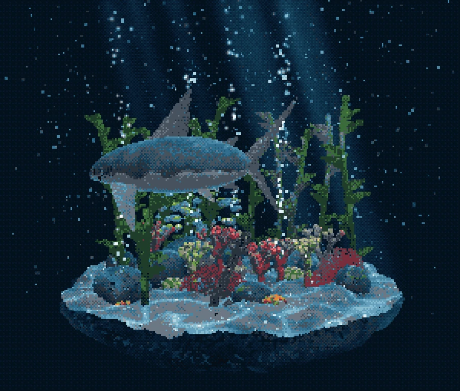
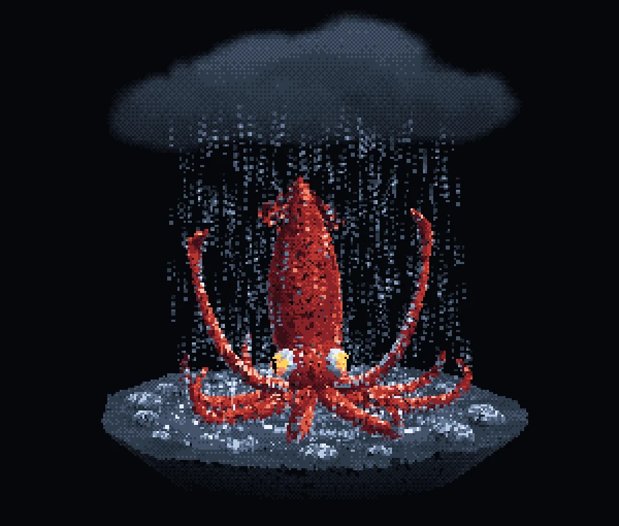
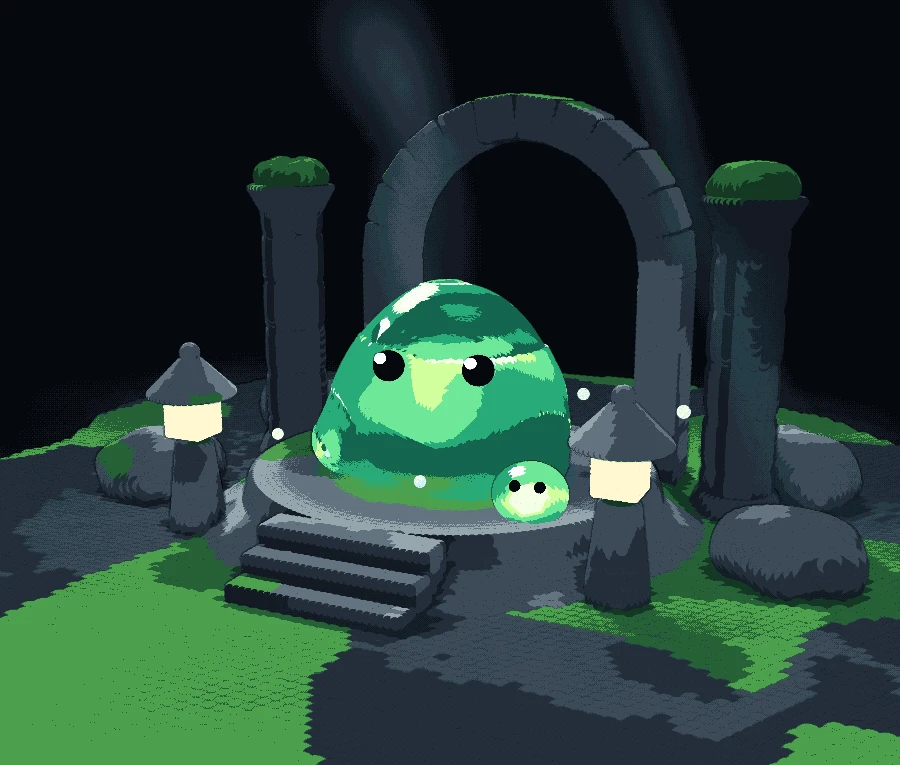
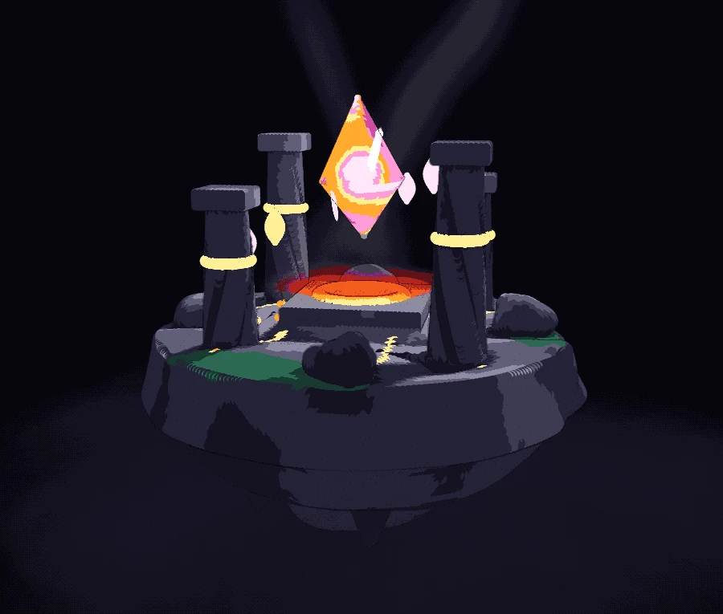

three.js大白鲨Great White
大白鲨绕着珊瑚礁巡游，身体和尾巴真实摆动；海带、鱼群、光柱、气泡和焦散。
A great white circles a reef with real body undulation — kelp, a fish school, god rays, bubbles and caustics.
进入Open →
three.js雨中的乌贼Squid in the Rain
乌云下的红色乌贼，触手在水洼里游动，雨滴落下溅起水花，偶尔有闪电。
A red squid under a storm cloud, arms swirling in a puddle, rain splashing, the odd flash of lightning.
进入Open →
Ink Studio幽光史莱姆祭坛Luminous Slime Shrine
果冻软体物理的史莱姆，内部发光核心、石灯和体积光。点一下可以戳它。
A jelly slime with soft-body physics, a glowing core, stone lanterns and light shafts. Click to poke it.
进入Open →
Ink Studio熔火符文浮岛Ember Rune Island
玄武岩浮岛上的发光晶核与环绕碎片，扭曲符文石柱、火山烟雾和火星。
A glowing crystal and orbiting shards over a basalt island, twisted rune pillars, smoke and embers.
进入Open →